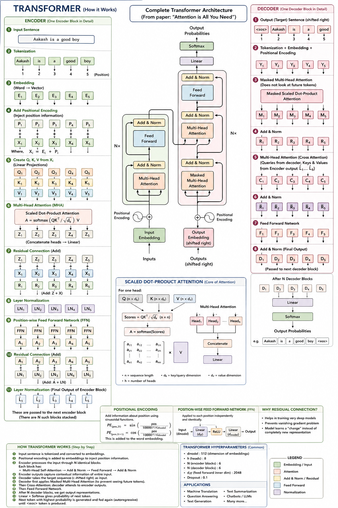

I went through "Attention Is All You Need" line by line, sat with Jay Alammar's Illustrated Transformer, rewatched the relevant 3Blue1Brown material, and worked through my own class diagram until every arrow made sense. This is that — encoder, decoder, and everything in between — written the way I actually want to remember it.
Before 2017, sequence models (translation, summarization, anything language-in-language-out) leaned on RNNs and LSTMs. Those read a sentence one word at a time, carrying a hidden state forward like a relay baton. The Transformer's whole pitch, right there in its title, is that you don't need any of that.
"Attention Is All You Need" — Vaswani et al., Google Brain/Research, 2017 — proposed a network built entirely on attention, with no recurrence and no convolution at all. Their model reached 28.4 BLEU on WMT 2014 English-to-German translation, more than 2 BLEU over the best prior results including ensembles, and a new single-model state of the art of 41.8 BLEU on English-to-French — after training for just 3.5 days on eight GPUs. The point wasn't just accuracy — it was that dropping recurrence let every position in the sequence be processed in parallel instead of one-at-a-time, which is exactly why it trains so much faster.
Popping open the black box from above, there are two halves: an encoder that reads the input sentence and builds a rich internal representation of it, and a decoder that takes that representation and generates the output, one token at a time. The original paper stacks six of each on top of each other — there's nothing magical about the number six.
A Transformer can't read letters. Before any of the interesting math happens, the sentence has to become numbers — and it happens in two small steps.
Take the class-notes example sentence: "Aakash is a good boy." First it's tokenized — split into the smallest units the model works with, and each one is assigned a position:
| Token | Aakash | is | a | good | boy |
|---|---|---|---|---|---|
| Position | 1 | 2 | 3 | 4 | 5 |
Then each token is embedded — looked up in a big table (learned during training) and converted into a vector of numbers. In the original paper this vector has dimension \(d_{model} = 512\), the size shared by every sub-layer and every embedding in the model. Modern sub-word tokenizers (byte-pair encoding, word-piece) split rare words into fragments so nothing is ever "unknown," but the principle is identical.
One detail that matters later: only the bottom-most encoder does this lookup. Every encoder above it just receives the 512-dim output vectors of the encoder directly below — the abstraction is identical at every level.
Here's a real problem: the Transformer looks at every token simultaneously. Unlike an RNN, it has no built-in notion of "first" or "last." Without fixing this, "dog bites man" and "man bites dog" would be indistinguishable.
The fix is to add a second vector, \(P_i\), on top of the word embedding \(E_i\), for every position \(i\):
The paper builds these position vectors from sine and cosine functions of different frequencies:
Even dimensions get sine, odd dimensions get cosine, and the wavelengths form a geometric progression from \(2\pi\) up to \(10000 \cdot 2\pi\). The reason this particular function was chosen, rather than a simpler ramp like 1, 2, 3…, is that for any fixed offset \(k\), \(PE_{pos+k}\) can be expressed as a linear function of \(PE_{pos}\) — which hands the model an easy way to learn relative position, not just absolute position.
After this step, every token is a single 512-dim vector that encodes both what the word means and where it sits in the sentence. These \(X_1 \ldots X_5\) vectors are what actually enter the first encoder block.
This is where self-attention actually begins. For every token's vector \(X_i\), the model creates three smaller vectors — a Query, a Key, and a Value — by multiplying \(X_i\) against three learned weight matrices.
In the paper, queries and keys have dimension \(d_k = 64\) and values have dimension \(d_v = 64\) — smaller than the 512-dim embedding on purpose, so that running eight attention heads in parallel costs roughly the same as one big head.
Do this for all five tokens and you get five Query vectors, five Key vectors, and five Value vectors — stacked into matrices \(Q\), \(K\), \(V\) so the whole thing runs as fast matrix multiplication on a GPU instead of five separate loops.
Before looking at the matrix formula, it's worth walking through the arithmetic on two real words, the way Jay Alammar's post does it — because every step of the formula maps to something you can actually compute on paper.
Say the sentence is just "Thinking Machines" and we're computing the self-attention output for the word "Thinking" (position 1).
| Thinking | Machines | |
|---|---|---|
| Score (q₁·k) | 112 | 96 |
| Divide by 8 | 14 | 12 |
| Softmax | 0.88 | 0.12 |
Scaling by \(\sqrt{d_k}\) isn't decorative. For large values of \(d_k\), dot products grow large in magnitude, which pushes softmax into regions with extremely small gradients — training stalls. Dividing by \(\sqrt{d_k}\) keeps the numbers in a range where softmax still has useful gradients to learn from.
In matrix form — the version that actually runs on a GPU across every token at once — all five steps above collapse into one formula:
One attention calculation gives every word a single lens to look at the sentence through. Multi-head attention gives it eight lenses at once, each free to specialize in something different.
Instead of performing one attention function with 512-dimensional keys, values, and queries, the model linearly projects Q, K, and V h times with different learned projections, then performs attention in parallel on each projected version. The paper uses \(h = 8\) heads, with \(d_k = d_v = d_{model}/h = 64\) each — so the total computational cost stays close to that of one full-dimensional head.
Each head produces its own \(Z\) matrix — eight of them. The feed-forward layer coming next expects a single matrix per token, not eight, so the eight are concatenated side by side and multiplied by one more learned matrix \(W^O\) to project back down to 512 dimensions:
After attention produces its output Z, the model does something that looks almost too simple to matter: it adds the original input X back in, then normalizes the result.
This exact pattern — residual connection followed by layer normalization — wraps around both sub-layers in every encoder layer, and every sub-layer in every decoder layer. The reasons it matters:
Layer normalization then rescales every vector to zero mean and unit variance, with learned scale and shift parameters, so numbers stay in a similar range no matter how deep the stack gets — which is what makes training a 6-layer (or 96-layer) stack numerically stable instead of exploding or vanishing.
After attention decides what's relevant, each token still needs a chance to actually process that information — independently, without looking at its neighbors again.
Each layer in the encoder and decoder contains a fully connected feed-forward network, applied to each position separately and identically: two linear transformations with a ReLU in between.
The dimensionality of input and output is \(d_{model} = 512\), while the inner layer expands to \(d_{ff} = 2048\) before shrinking back down. Same weights are reused at every position within a layer — but different layers learn different weights.
Put steps 2 through 8 together and one encoder block is complete. Stack six of them and you have the full encoder.
The encoder is a stack of \(N = 6\) identical layers, each with two sub-layers: multi-head self-attention, then a position-wise feed-forward network — with a residual connection around each, followed by layer normalization. The output of the top encoder block, five vectors \(L_1 \ldots L_5\) in our running example, is the finished, context-rich representation of the input sentence.
This is the diagram I actually drew out while working through the paper and class notes — every numbered step above corresponds to a numbered box here, encoder on the left, decoder on the right, complete architecture in the middle.

The decoder is autoregressive: it generates one word, feeds that word back in as input, and generates the next. Everything on this side of the diagram exists to make that loop work correctly, both during training and at inference.
During training, the decoder's input is the target sentence shifted right by one position, with a special <sos> token prepended. This masking, combined with the fact that output embeddings are offset by one position, ensures predictions for position i can depend only on the known outputs at positions less than i.
The decoder's first attention block is nearly identical to encoder self-attention, with one critical change: future positions are masked out by setting their scores to \(-\infty\) before the softmax step, so the illegal connections become exactly zero after softmax.
Why does this matter so much? At training time, the whole target sentence is fed in at once for efficiency — but if position 3 could see positions 4 and 5, the model would just be copying the answer instead of learning to predict it. Masking is what keeps training honest and keeps it consistent with how the model will actually be used at inference, generating one real word at a time with no future to peek at.
This is the single most distinctive block in the whole architecture, and the one that actually connects "understanding the input" to "generating the output."
In encoder-decoder attention layers, queries come from the previous decoder layer, while the keys and values come from the output of the encoder — letting every position in the decoder attend over every position in the input sequence.
This is exactly how the decoder "reads" the source sentence while writing the translation: at every generation step, it re-asks the encoder's fixed representation which parts of the input are relevant to the word it's about to produce next.
After all six decoder blocks, we're left holding a 512-dimensional vector. Somehow that has to become an actual word from the vocabulary.
A Linear layer projects that vector up into a much larger "logits" vector — one score per word in the entire output vocabulary (say, 30,000 words). Softmax then converts those raw scores into probabilities that sum to 1:
The simplest way to pick a word is greedy decoding: just take the highest-probability word every time. The paper instead uses beam search with a beam size of 4 and a length penalty of 0.6, keeping a handful of the most promising candidate sequences alive at each step rather than committing to one guess too early — a small hedge that measurably improves translation quality over pure greedy decoding.
Whichever word gets chosen is appended to the decoder's own input, and the entire decoder stack runs again to produce the next word. This repeats until the model emits a special <eos> token, at which point generation stops.
Every forward pass above is identical whether the model is trained or fully finished. What changes during training is that we now have a correct answer to compare against.
Each target word is represented as a one-hot vector — 1.0 at the correct word's index, 0.0 everywhere else. The untrained model's softmax output starts out close to uniform nonsense across the whole vocabulary; training is the process of nudging that distribution, one gradient step at a time, until it sharpens toward the correct word at every position.
The optimizer is Adam, with \(\beta_1 = 0.9\), \(\beta_2 = 0.98\), \(\epsilon = 10^{-9}\), and a learning rate that increases linearly for the first \(\text{warmup\_steps} = 4000\) steps, then decays proportionally to the inverse square root of the step number thereafter. Two regularizers matter in practice: residual dropout applied to the output of every sub-layer at a rate of 0.1, and label smoothing of value 0.1 — which deliberately never lets the model become 100% confident in any single answer, hurting raw perplexity slightly but improving both accuracy and BLEU.
The paper's justification for self-attention isn't just "it scored higher" — it's a structural argument about how information travels through the network.
Three things matter when comparing layer types: computation per layer, how much of that computation can run in parallel, and — the one that really decides whether long-range dependencies are learnable at all — the maximum path length a signal must travel between any two positions.
| Layer type | Complexity / layer | Sequential ops | Max path length |
|---|---|---|---|
| Self-Attention | O(n²·d) | O(1) | O(1) |
| Recurrent | O(n·d²) | O(n) | O(n) |
| Convolutional | O(k·n·d²) | O(1) | O(log_k(n)) |
A self-attention layer connects all positions with a constant number of sequential operations, whereas a recurrent layer requires O(n) sequential operations — and self-attention layers are faster than recurrent ones whenever sequence length n is smaller than representation dimension d, which is the common case for the word-piece and byte-pair representations used in state-of-the-art translation. A recurrent network has to pass information step by step through n hidden states to connect word 1 to word n; self-attention connects them directly, in one hop, regardless of how far apart they are.
| Parameter | Value | Meaning |
|---|---|---|
| d_model | 512 | dimension of every embedding and sub-layer output |
| N | 6 | number of encoder blocks = number of decoder blocks |
| h (heads) | 8 | parallel attention heads |
| d_k = d_v | 64 | dimension of each Q/K/V vector per head (512/8) |
| d_ff | 2048 | inner dimension of the feed-forward network |
| Dropout | 0.1 | regularization rate applied throughout |